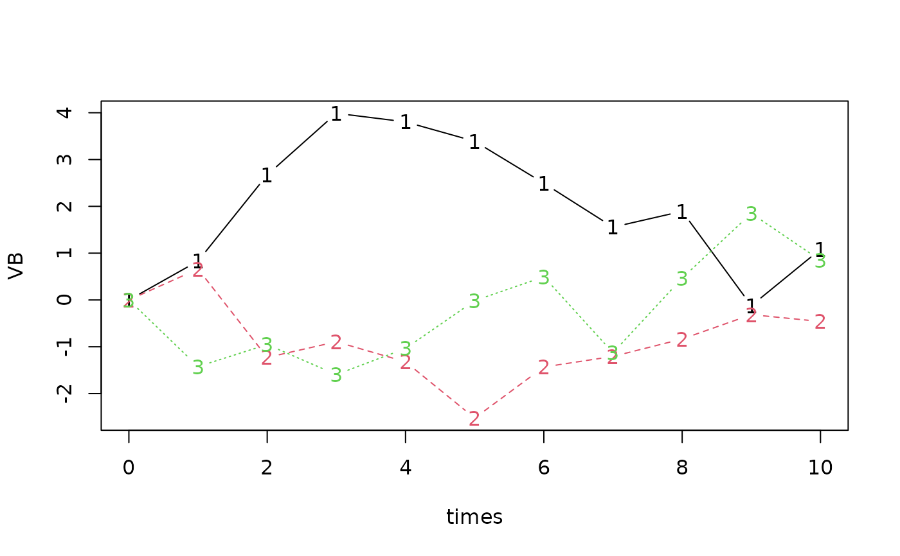

Simulate a multivariate Brownian motion
numeric vector of time points where the Brownian motion should be simulated
numeric scalar, dimension of Brownian motion
noise level in the Brownian motion. A vector of length n, one for each dimension, or a scalar, in which case the same level is applied to all dimensions.
initial condition, applicable at time t=0. A vector of length n, one for each dimension, or a scalar, in which case the same initial condition is applied to all dimensions.
Drift. An optional numeric n-vector which defaults to a vector of zeros. When supplied, a linear drift (bias) is added to each component.
a numeric array, n*length(times), each column containing a sample path
times <- 0:10
VB <- rvBM(times,3)
matplot(times,VB,type="b")
